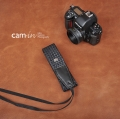

器材库 > 摄影包 > Cam-in CAM8650

详细规格
产品类型
相机背带
发布日期
2000
颜色
黑色
色国天堂2014-06-25 16:535 分
操作性 5.00功能性 5.00美观性 5.00趣味性 5.00耐用性 5.00性价比 5.00
r3d2014-05-28 09:294.83 分
操作性 5.00功能性 5.00美观性 5.00趣味性 4.50耐用性 4.50性价比 5.00
koala1112014-05-26 16:094.5 分
操作性 4.00功能性 4.50美观性 5.00趣味性 4.00耐用性 4.50性价比 5.00
米诺克思2014-05-26 16:084.5 分
操作性 4.50功能性 4.50美观性 5.00趣味性 4.00耐用性 4.50性价比 4.50
bluepepper2014-05-26 15:094.58 分
操作性 4.50功能性 4.50美观性 5.00趣味性 4.50耐用性 4.50性价比 4.50
产品图 / 样片
1
评测 / 相关文章
该产品暂无存档的评测文章